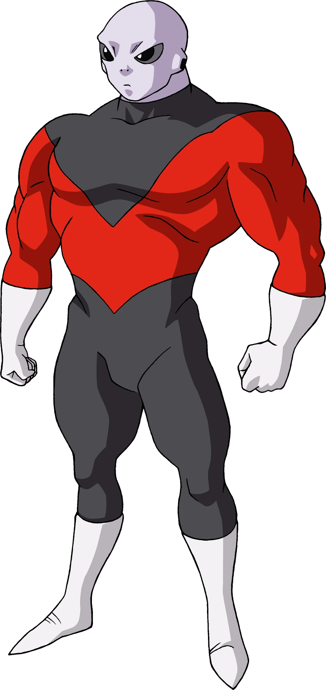
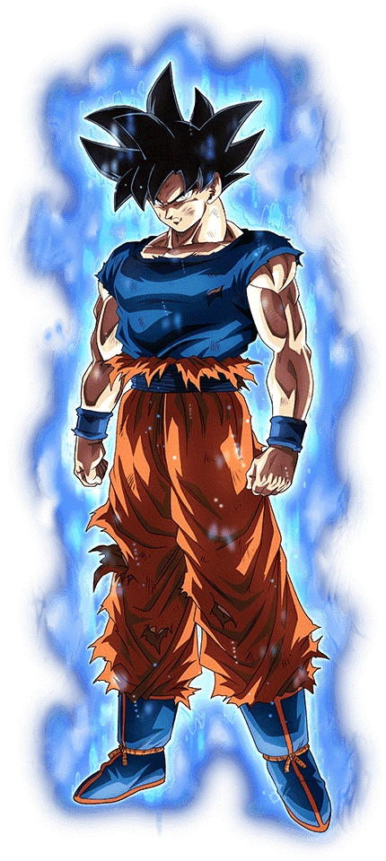

The z-index Property



About Jiren:
Jiren is a tall and very muscular humanoid alien with an appearance similar to the folkloric aliens known as the Greys. He has gray skin, big round black eyes with enlarged pupils, and nostrils in place of a full nose. He wears the uniform of the Pride Troopers consisting of a red, spandex-like suit with black sections around the collar and legs, white gloves, and white boots.
Ultra-Instinct Sign Goku
An enlightened transformation attained by Goku during his battle with Jiren when he fell into the center of the Spirit Bomb as it exploded, absorbing the Spirit Bomb's energy into his body and broke through one of his "shells", allowing him to tap into the deeper potential he possessed. In the manga, Ultra Instinct Sign is obtained as a result of Goku focusing on the lessons taught to him by his various teachers since he was a child and then combining them following Master Roshi's words of Martial Arts being more than simply strength and involves personal strength and letting go of self-doubt.
Ultra Ego Vegeta
This state is attained by one who has received a proper God of Destruction training and has gained the ability to use the powers of one. However, the state can only be utilized when the user is in the right mindset to act as a Destroyer. Vegeta at one point during his fight with Granolah described the form as a polar opposite to Ultra Instinct. A user of this state gains the power of destruction.[5][6]
Ultra Ego is the strongest form Vegeta has appeared in. Ultra Ego changes its users ki to become the same as that of a God of Destruction and its users power grows without limit through instinct as their fighting spirit increases.[8]